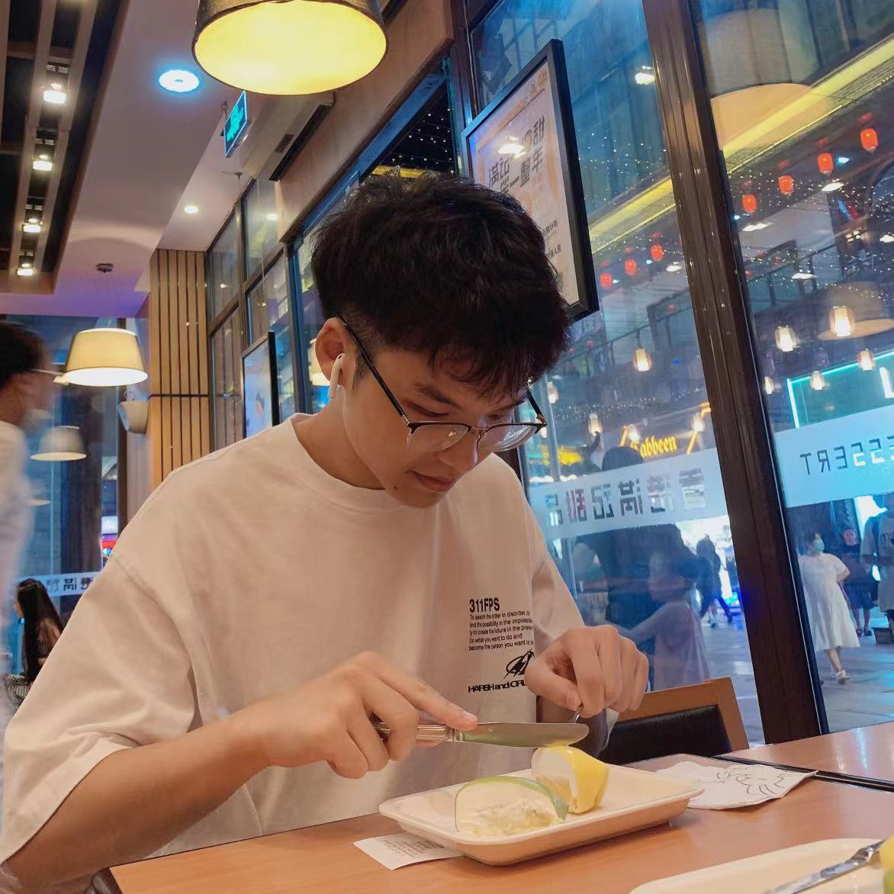

我叫范举，来自四川省，具有四川人身上特有的秉性：性格豪爽，喜欢吃辣。我喜欢和人交朋友，从小到大每到一个新环境我总会靠着我的社交牛逼症交到许多志同道合的新朋友：他们中间的大多数人到今天依旧陪在我的身边，少部分也跟我好好说了道别。作为一个快乐至上主义者，有的时候我显得非常的自私懒惰，但是这并不影响我也是一个侠肝义胆的人。
《霸王别姬》是两岸三地电影人合作拍片最成功的代表作之一，也是中国电影雅俗共赏的典范作品 。影片影像华丽，剧情细腻，内蕴丰富深广。同时这部电影也正好是我最爱的明星——张国荣（Leslie）主演的。张国荣的演出是影片表演上最大亮点，他以形神兼备的演出，将程蝶衣这个“不疯魔不成活”的角色演绎得淋漓尽致，是《霸王别姬》获得成功的关键因素之一。该片是中国电影的一个巅峰：唯一一部获得戛纳电影节最高奖——金棕榈大奖的华语片。影片感情强烈，情节曲折，充满生生死死的戏剧冲突，电影邀请几位大明星主演，具备充分的商业元素，但同时也蕴含了深刻的文化内涵，被认为是“通俗中见斑斓，曲高而和者众”。